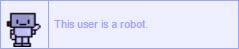
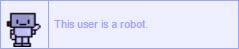

Name: Owen B.
Age: current year minus 2000
Height: short
Weight: didn't your mom ever teach you not to ask that or something
Eyes: four
Species: Human, I've been assured.

Part-time dinosaur, full-time idea-haver. World's most useless renaissiance man. Lives in New England in a state that begins with "M". Likes drawing comics, finding cool things on the ground outside, making stuff, and sometimes messing around with code, resulting in things like this site.
Life plan: build the robots that steal everyone else's jobs, and then retire and become an old decrepit beekeeper, if bees even still exist by 2065. :(
Do you follow me? Why are you following me? Are YOU that shadowy figure I keep seeing over my shoulder, then dismissing as a figment of my imagination when I turn my head and you're no longer there?
Tumblr (mostly art)comic Tumblr
Listography (why do I have this)
Reddit (I never use this)
Neocities (Why would you click this link? You're already here.)

 
